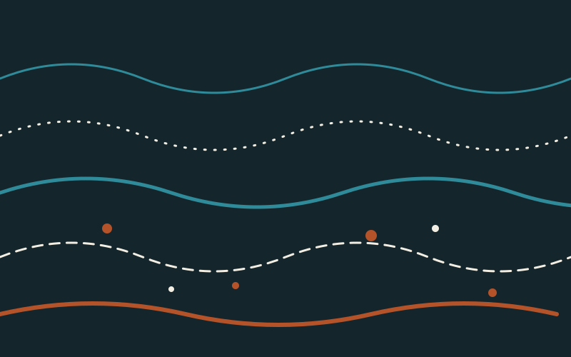

Field Notes · Shore
A Field Guide to the Wrack Line
Every high tide writes a sentence in kelp, cork and bone along the sand. Five things worth stooping for.
By Tomas Ibarra · · 4 min read

Feature · Salt
Forty-one shallow pans, one wooden sluice and a keeper who lets the sun do the only work that has ever mattered.
By Ines Calloway · · 5 min read

Field Notes · Shore
Every high tide writes a sentence in kelp, cork and bone along the sand. Five things worth stooping for.
By Tomas Ibarra · · 4 min read
The Letter
Most magazines are made at desks. This one is made at the edge of things, in the hour either side of low water, when the sea has retreated far enough to show its working.
Issue 07 is about slowness: a salt works that measures its year in weeks of sunshine, and a strip of sand that keeps a calendar in kelp. Neither is a story about disaster, and neither is nostalgic. Both are about attention, the cheapest and rarest thing the shoreline gives away.
— Ines Calloway, Editor